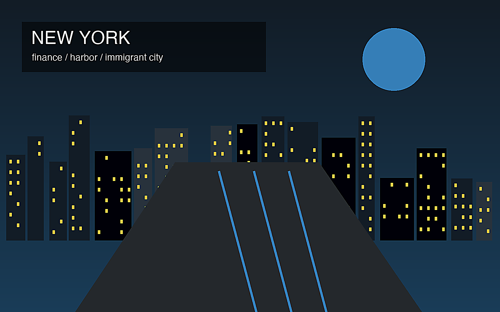

地政学
ハドソン川河口と大西洋港湾を背景に、ウォール街、国連、巨大空港、移民地区が重なる。

🇺🇸 アメリカ合衆国 / 北米 / World City Atlas
大西洋に開く金融と移民の世界都市。世界都市として、経済規模だけでなく、地理、産業、宗教文化、暮らし、観光を分けて読みます。
都市の骨格
ハドソン川河口と大西洋港湾を背景に、ウォール街、国連、巨大空港、移民地区が重なる。

ハドソン川河口と大西洋港湾を背景に、ウォール街、国連、巨大空港、移民地区が重なる。
金融だけでなく、医療、大学、出版、舞台芸術、飲食、小売、港湾物流が厚い雇用を作る。
ユダヤ教、カトリック、プロテスタント、イスラム教、ヒンドゥー教、仏教などが地区ごとに根づき、多言語の食文化と結びつく。
マンハッタンの摩天楼、ブルックリンの住宅地、クイーンズの移民街、公園と地下鉄が日常と観光をつなぐ。
Geography
都市の経済力は、地図上の位置、港湾、鉄道、空港、河川、周辺都市との関係から生まれます。
ハドソン川河口と大西洋港湾を背景に、ウォール街、国連、巨大空港、移民地区が重なる。
ニューヨークを単体の市街地としてではなく、周辺の住宅地、産業地、物流施設、教育機関と接続した都市圏として見ると、GDPの大きさが日々の通勤、土地利用、観光、文化施設の配置にどう表れているかが分かります。
金融だけでなく、医療、大学、出版、舞台芸術、飲食、小売、港湾物流が厚い雇用を作る。
この都市では、華やかな中心業務地区の背後に、清掃、建設、配送、調理、介護、教育、保守、警備といった日常的な労働があります。都市の経済規模を見るときは、数字だけでなく、その数字を支える人と場所を同時に見る必要があります。
Industry
主力産業だけでなく、周辺の小さな仕事が都市を毎日動かしています。
Culture
宗教施設、祭礼、市場、劇場、大学、移民地区は、都市の経済とは別の時間を保存します。
ユダヤ教、カトリック、プロテスタント、イスラム教、ヒンドゥー教、仏教などが地区ごとに根づき、多言語の食文化と結びつく。
マンハッタンの摩天楼、ブルックリンの住宅地、クイーンズの移民街、公園と地下鉄が日常と観光をつなぐ。